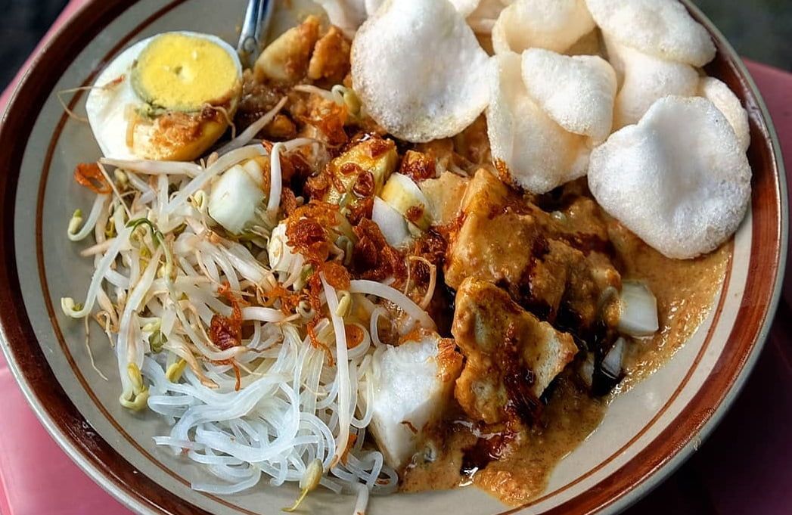

Ketoprak
Makanan Khas Jakarta
cara Membuat Ketoprak:
1. Goreng tahu putih hingga matang. Angkat dan tiriskan. Potong kotak dan sisihkan.
2. Seduh tauge dan bihun menggunakan air panas. Tiriskan dan sisihkan.
3. Membuat saus: Haluskan atau giling bawang putih, cabe rawit, gula merah, dan kacang tanah. Tambahkan air asam jawa, campur hingga rata. Sisihkan.
4. Tata ketupat, tahu, bihun, dan tauge di piring. Siram dengan saus kacang lalu beri kecap sesuai selera. Taburi bawang goreng dan lengkapi dengan kerupuk serta telur rebus.
5. Siap disajikan.